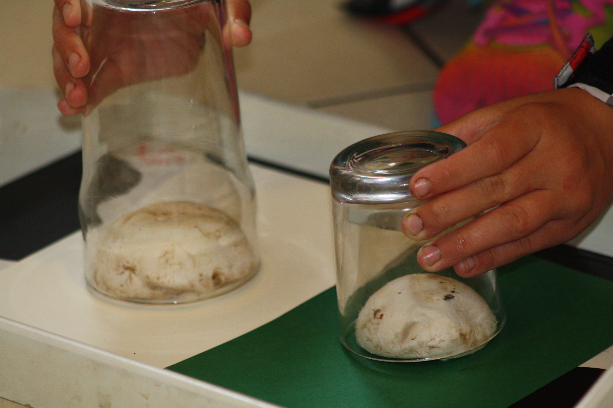
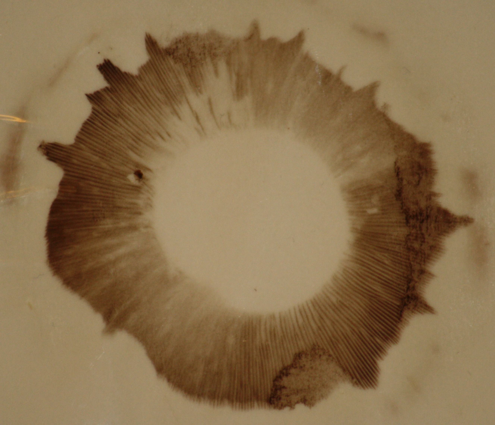

I'm a fun guy...
04-Jun-2017 | Milku
so we've been making spore prints from fungi.

It's Day 4 of 30 Days Wild. And I've been finding it a bit tedious that my humans haven't really got anything exciting to show after all their activities. It'a always 'come back later' to see if anything has grown or something has happened. I'm going to insist that they do a bit of preparation and then can show the results later on. Come on. There could be anything in those pots of soil they keep photographing.
It's the weekend so they've had plenty of time to get a few things underway and have set them aside to grow, mature or whatever. I'll tell you the details when my humans look at them again. But for the time being I'll just give you a hint of what will be coming your way in the next few weeks.
- Activity #83 in our favourite outdoor activities book - making our own fertiliser.
- Activity #134 - discovering microscopic life in rainwater.
- Activity #271 - making a spider's web catcher.
- Activities #123 and #259 - planting seeds
- Activities #69 and #129 - making flower and ice decorations
Today's activity was started yesterday because they needed to wait 24 hours to see the results. They'd decided to take mushroom spore prints, following the instructions in activity #71 of the 365 Outdoor Activities You Have To Try book.
They had to lie a mushroom flat on a piece of cardboard and cover it to protect it from draughts. Then they had to leave it alone overnight. That was the tricky part. My little humans can't resist fiddling with things.
Since fungi can produce white, black or yellow spores and we didn't know what our supermarket-bought mushrooms would produce, we hedged our bets and set up one mushroom on a piece of white cardboard and another on a piece of dark green cardboard.
Well, it became clear that having dark-coloured gills resulted in a dark-coloured print. So here's the image that was on the white cardboard.
While I don't mind nibbling on a bit of mushroom, I hope they give me some they haven't experimented with... Actually, I think the little humans are hoping to get out some paint and use the mushrooms to make a different sort of print. So maybe they'll have some artwork to show you later.